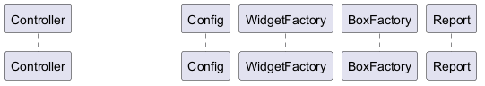

@startuml
!$production_config = {
"job_list": [
{
"customer_name": "Future Gadget Lab",
"widgets_per_box": 4,
"required_widgets": 10,
"allow_partially_filled_box": false
},
{
"customer_name": "Acme Corporation",
"widgets_per_box": 5,
"required_widgets": 10,
"allow_partially_filled_box": true
},
{
"customer_name": "Stark Industries",
"widgets_per_box": 6,
"required_widgets": 15,
"allow_partially_filled_box": true
},
{
"customer_name": "Gaitonde Enterprises",
"widgets_per_box": 3,
"required_widgets": 12,
"allow_partially_filled_box": false
}
]
}
!foreach $job in $production_config.job_list
newpage Customer '$job.customer_name' Jobcard
!$widgets_per_box = %intval($job.widgets_per_box)
!$required_widgets = %intval($job.required_widgets)
Controller -> Config: How many widgets?
Config -> Controller: $required_widgets
Controller -> Config: How many widgets per box?
Config -> Controller: $widgets_per_box
Controller -> WidgetFactory: Start Production $required_widgets widgets
!$required_boxes = $required_widgets / $widgets_per_box
!$remaining_widgets = %mod($required_widgets, $widgets_per_box)
!if $remaining_widgets != 0 && %boolval($job.allow_partially_filled_box) == %true()
!$required_boxes = $required_boxes + 1
!endif
Controller -> BoxFactory: Start Production $required_boxes boxes
BoxFactory -> Controller: $required_boxes boxes ready
!$widget_count = 0
!$box_count = 0
!while $widget_count < $required_widgets
WidgetFactory -> Controller: Widget '$widget_count' ready
!$widget_count = $widget_count + 1
!if %mod($widget_count, $widgets_per_box) == 0
Controller -> Controller: Pack $widgets_per_box widgets into box '$box_count'
!$box_count = $box_count + 1
!endif
!endwhile
!if %boolval($job.allow_partially_filled_box) == %true()
!if $remaining_widgets != 0
Controller -> Controller: Pack $remaining_widgets widgets into box '$box_count'
!endif
Controller -> Report: $required_boxes boxes with $required_widgets widgets ready
!else
Controller -> Report: $required_boxes boxes with %eval($required_widgets - $remaining_widgets) widgets ready
!if $remaining_widgets != 0
Controller -> Report: $remaining_widgets widgets are left unpacked
!endif
!endif
!endfor
@enduml